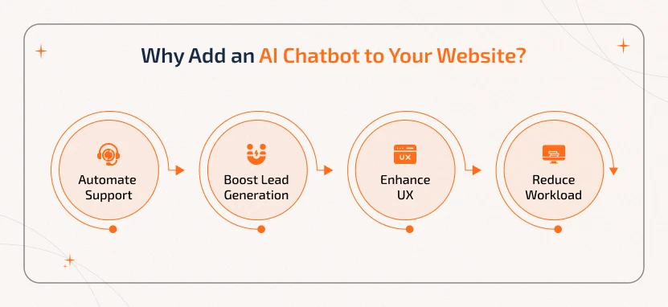
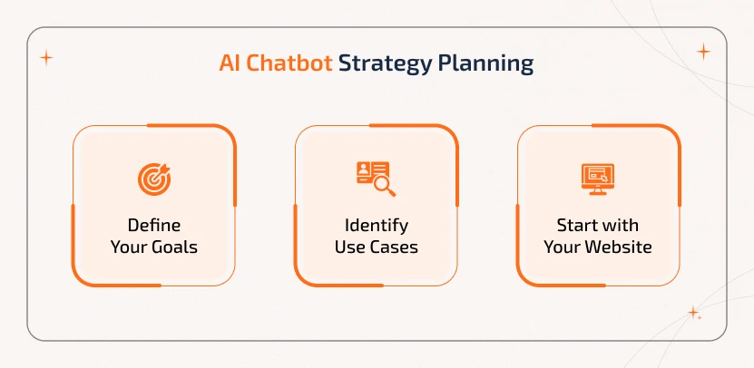
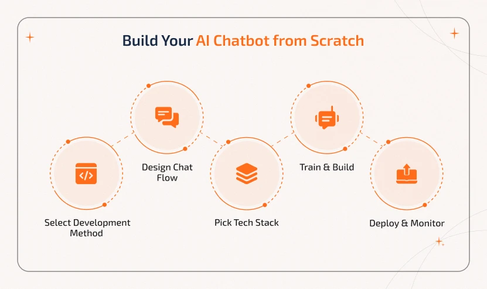
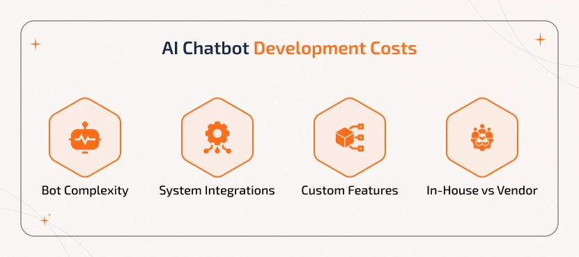

In the digital-first era, businesses are focusing more on providing instant customer engagement. This is when an AI chatbot comes in. If you have ever wondered how to build an AI chatbot for your website, then this blog has got you covered.
Since customers look for instant responses, personalized experiences, and round-the-clock availability, businesses that don't keep up will lose leads and loyalty in no time. This is why smart brands are investing in AI chatbot development.
A well-structured chatbot will not only automate conversations but also boost user engagement, reduce support costs, and operate 24/7. It is like having a team member who never takes a rest and always brings the right answer.
Here in this guide, you will find the entire AI chatbot development process—from choosing the right tools to training your bot and deploying it into your existing systems. No matter if you are starting from scratch, a start-up founder, or an enterprise owner, we have got you covered.
Why Do You Need an AI Chatbot for Your Website?
Adding an AI chatbot to your website is a smart move, as it helps unlock real value for your business and your users. Here are the benefits of an AI chatbot when integrated into a website:

1. Automates Customer Support
The biggest flex and benefit of an AI chatbot is its ability to take up repetitive support queries and answer them instantly. This covers everything from answering FAQs to troubleshooting common problems, with chatbots providing real-time assistance. Thus, chatbots not only reduce wait times but also improve customer satisfaction. On the other hand, they reduce human agent intervention and help them focus on complex and high-priority tasks.
2. Increase Conversation & Lead Generation
AI chatbots integrated into your website can proactively engage visitors, qualify leads, and guide them to purchase or sign up. They also help reduce drop-offs by asking the right questions and offering timely suggestions. This way, the chatbots push users down the funnel and boost conversion rates.
3. Enhance User Experience
With a well-trained AI chatbot, users can find what they want much faster. Furthermore, these chatbots can recommend products, offer support, and personalize content based on user behavior, which contributes to a smoother, more engaging website experience.
4. Reduce Human Workload
AI chatbots can handle several interactions at the same time, which otherwise wouldn't be possible with a single human agent. Thus, the chatbot eases the pressure on the service team and reduces operational costs by minimizing the need for a large support staff during peak hours or after business hours.
Discover how AI chatbot development can automate support, boost leads, & scale your business 24/7.

Know the Types of AI Chatbots
Based on your business goals and user needs, choosing the right type is vital when it comes to chatbot development. The two major types of chatbots are as follows:
1. Rule-Based Chatbots
As the name suggests, these chatbots follow predefined workflows or decision trees. They are capable of handling simple tasks like answering FAQs, booking appointments, collecting contact details, etc. Although rule-based chatbots have limited capability to handle complex or unpredictable queries, they can be deployed at a faster rate.
2. AI-Powered Chatbots (NLP & ML)
These are advanced chatbots and use Natural Language Processing (NLP) and Machine Learning (ML) to understand user intent and learn from interactions. Modern AI chatbot development involves them to engage in more human-like conversations and improve over time. Thus, they are ideal for handling dynamic scenarios in large-scale applications.
Use Cases Across Industries
Get to know the impact of AI chatbot development across a wide range of industries.
| Industry | Use Cases |
|---|---|
| eCommerce | Product recommendations, Order tracking, Return handling, 24/7 customer support |
| SaaS | User onboarding, Feature guidance, Troubleshooting, Churn reduction |
| Healthcare | Appointment scheduling, Symptom checking, Patient triage |
| Finance | Account inquiries, Transaction tracking, Budgeting assistance, & Fraud alerts |
| Education | Course selection, Deadline reminders, Student support, & FAQs |
AI Chatbot Strategy Planning
Just before getting into the development process, it is vital to lay a solid foundation. No matter if you are working with a team or learning to build an AI chatbot from scratch, the following section highlights the strategies that you should follow for your chatbot to drive real-time success.

1. Define Your Goals
Begin by identifying what you want your AI chatbot to perform. Some of the common objectives include lead generation, customer support, user onboarding, and feedback collection.
2. Identify Use Cases
With the goals defined, you should determine the tasks your chatbot should handle—for instance, booking appointments, answering FAQs, or upselling products. With clear use cases, the chatbot can effortlessly converse and perform tasks.
3. Start with Your Website
As you are focusing on AI chatbot development for your website, that should be your core platform. A chatbot on your website is accessible to all visitors and can be integrated easily. Besides, it offers great support, brings in leads, and enhances user engagement.
If needed, you can even extend the functionality to other platforms like mobile apps, messaging platforms, and live chat tools.
Not sure where to begin? Our experts will help you identify the right use cases & map your goals.
How to Build an AI Chatbot for Your Website from Scratch?
The following step-by-step breakdown of how to build an AI chatbot for your website is all you need to turn your idea into action.

Begin by deciding on the development approach on which you are about to build your chatbot. You can choose between the following ways:
1. No-Code Platforms
- You can create simple chatbots with drag-and-drop interfaces quickly using Landbot, Tidio, ManyChat, etc. This is suitable for lead capturing or offering basic support.
2. Custom Development
- This offers more control and scalability. Hence, it is ideal if you are integrating advanced NLP, business logic, or deep learning capabilities.
Additionally, those who prefer a scalable, enterprise-grade solution can partner with AI chatbot development companies, as they will handle everything from UX design to backend integrations.
The next step is to plan how your bot will talk. A well-defined conversation flow is vital for effective AI agent development. For this:
- Define your bot persona and tone.
- Build flows around common queries and FAQs.
- Include fallback intents for out-of-scope questions or unclear inputs.
- Finally, ensure the experience is helpful and human-like.
For a chatbot to be powerful and adaptable, choosing the right tech stack is important. You should select between:
- NLP Engines - Dialogflow, Rasa, IBM Watson, GPT-4
- Integration Tools - APIs, CRMs, live chat platforms, webhooks
Ensure you choose a stack that supports long-term AI development and scales with your business.
It is essential to train your chatbot with high-quality data for reliable and accurate results. This is the step where the chatbot comes to life.
- Use machine learning models and training datasets to enhance recognition and contextual understanding.
- Include training examples for a wide range of use cases.
- Use edge cases to train your bot on how to respond when it doesn't understand the user.
When the chatbot is ready, it’s time to deploy it on your website.
- Use a plugin, script, or backend integration based on your tech stack.
- Use dashboards to monitor key metrics like customer satisfaction, user retention, resolution rate, and escalation to human support.
You should continuously optimize the chatbot based on real usage data to improve performance over time.
Is It Possible to Create an AI Bot With No-Code Tools
Yes. If you are not a developer or looking for faster ways to launch, no-code platforms offer everything you need to create an AI chatbot for your website.
You can rely on popular no-code tools like Tidio, Landbot, and ManyChat to build and deploy a chatbot. They use drag-and-drop interfaces, pre-built templates, and visual conversational flows.
Companies can rely on no-code chatbot tools to capture leads, answer FAQs, book appointments, and automate support. Hence, they are ideal for small businesses that cannot afford a heavy investment in development.
Cost to Build Your Own AI Chatbot

Are you wondering how much it would cost to build your own AI chatbot? Then the development cost varies based on certain factors, ranging from technical complexity to choosing in-house or external experts. Take a look at the key cost factors in brief:
1. Complexity of the Bot Simple bots are affordable and can be built with no-code tools. Whereas complex AI bots cost more due to advanced logic and training needs as they use NLP, machine learning, and adaptive responses.
2. Integrations The cost increases when you want your chatbot to connect to CRMs, payment gateways, or helpdesk platforms. Besides, custom integrations require additional API development and testing.
3. Custom Features Integrating features like multilingual support, analytics dashboards, and advanced personalization will increase development time and cost. You will have to pay even more if you want to integrate voice capability or sentiment analysis.
4. Development or Vendor Partner Relying on freelancers costs you less, but you might lack long-term support. At the same time, partnering with specialized AI chatbot development companies costs more as they cover everything from strategy planning to design, deployment, and scaling.
Understanding the price range will help you set the right budget and choose the platform that matches your business goals.
- No-code bots cost between $0–$100/month (subscription-based).
- Custom bots range from $3,000–$30,000 based on features, NLP models, and integrations.
- Enterprise AI agents cost $50,000+, for full-scale AI agent development.
Know your AI chatbot development cost upfront based on your needs & tech stack.
Challenges Faced When Building an AI Chatbot
Developing an AI agent is not a hassle-free task. In the middle of the development, teams will often run into data issues, technical limitations, and unpredictable user behaviour. Here are some of the key challenges faced by businesses while building an AI agent.
Limited Training Data
Most of the chatbots fail because the training data isn’t transparent enough. If the dataset doesn’t match real user behaviour, the chatbots will give you false answers. This makes the whole experience feel robotic.
Low Language Understanding Accuracy
Chatbots at a basic level usually struggle with slang, mixed languages, typos, and messy human inputs. Misinterpretations, even at the minimal level, will make the bot feel clueless and break the chat flow.
Edge Case Handle Failure
Users won’t just follow the usual and predictable patterns. During this situation, if the bot can’t manage the sudden topic jumps or random queries, the user experience becomes frustrating instead of helpful.
Complicated System Integrations
Linking the chatbot to CRMs, databases, and third-party tools can be challenging and often gets messed up. A weak and outdated backend will instantly limit how smart and flexible the bot can be.
Difficulty in Maintaining Accuracy
The AI medals can degrade if they aren’t upgraded. As the market evolves, the chatbot needs regular tuning to stay competitive. So, without proper maintenance, the chatbot becomes unreliable and outdated so quickly.
Why Choose Sparkout Tech for AI Chatbot Development?
If you are a start-up or an enterprise, choose Sparkout Tech as your AI chatbot development company, as we offer the strategy and tools needed for your chatbot to meet your business requirements.
1. Businesses looking for custom chatbot development beyond what no-code can offer.
2. If you need to integrate complex systems like CRMs, ERPs, e-commerce platforms, or helpdesks.
3. When you need advanced AI chatbot development using NLP, machine learning, or GPT-based models.
4. If you need an end-to-end AI agent development provider who handles everything from ideation to post-launch support.
Choosing Sparkout means you're working with an expert team that blends AI innovation with business insights. We stand ahead of competitors with:
- Deep AI Expertise
- Tailored Solutions
- Seamless Integration
- Scalable Architecture
- Transparent Process
We take around 2–4 weeks to deliver a standard chatbot, while for an AI-powered bot with NLP, CRM integration, and personalization features, we take around 1–2 months.
For a full AI agent solution, we take around 2–6+ months, as it involves integrating custom ML models, an analytics dashboard, and multi-platform AI.
We craft intelligent AI chatbot solutions that scale, adapt, and deliver measurable impact.
Future of AI Chatbots in Web Engagement
AI chatbots in recent times are becoming proactive, intelligent digital assistants that can transform how businesses engage with users online. The future of these agents is bright, and we may expect the following aspects:
1. Tomorrow’s chatbots will be more autonomous and capable of handling tasks without human oversight. They will shift from offering only scripted responses to true agentic AI that understands context, learns from interactions, and improves continuously.
2. Voice-enabled chatbots will come into effect, and there will be an increase in web chatbots handling voice input. This enables faster communication, improves accessibility, and enhances customer engagement.
3. With AI and deep analytics, future chatbots will offer hyper-personalized interactions. Thus, chatbots will provide personalized recommendations, adapt to user preferences, and deliver better outcomes using past interactions.
As AI chatbot development advances, these bots will work alongside human agents to predict needs, reduce friction, and increase engagement.